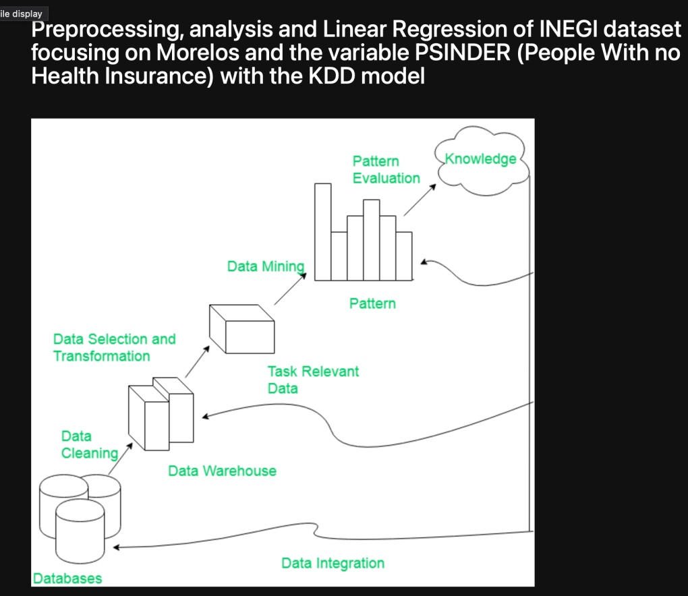

My Work


Data Engineer
I am a data engineer and an enthusiastic developer, proficient on distinct technical skills, I am passionate about learning more about the tech world and I am always open to acquire new knowledge on different fields. I am proactive, I can adapt to any type of situations and I am a fast learner, always trying to stay on point on my efficiency and always trying to give my best effort.
Skills
Experience
Education
I can develop applications utilizing python, I have certifications on web scraping and have been developing an OCR python app for ticket detection and annotation (working on it)
Certificate on Data Visualization using python, and have experience with distinct BI tools such as Tableau, Google Looker Studio, Power BI, Oracle Analytics, and others
I have developed my career on data engineering, with knowledge on big data, data warehouse, pipelines. I have utilized Apache Spark, Hadoop, and also Google Big Query, I have experience writing SQL queries